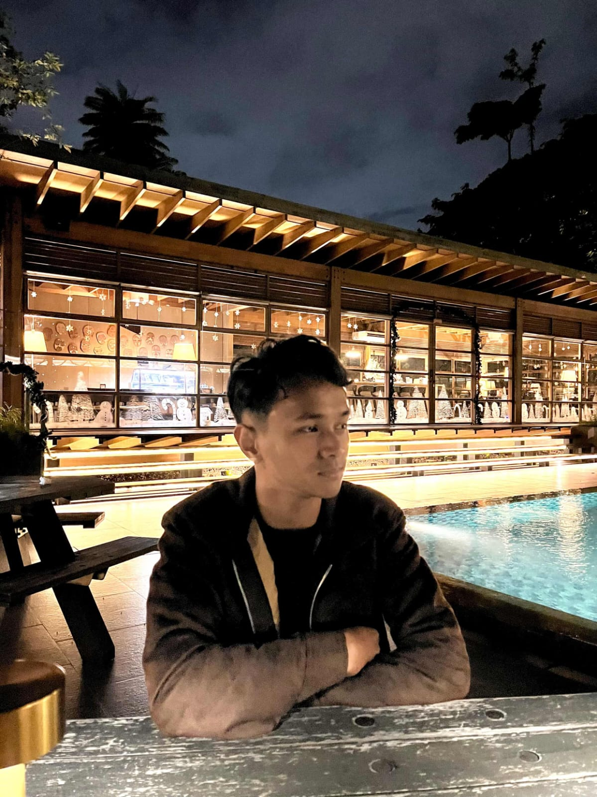

Profil Mahasiswa
Biodata
| NIM | : 2025081028 |
|---|
| Nama | : Muhammad Daffa Firdaus |
|---|
| Agama | : Islam |
|---|
| Tanggal Lahir | : 14 Juni 2007 |
|---|
| Tempat Lahir | : Tangerang |
|---|
| Program Studi | : Sistem Informasi |
|---|
Pendidikan
- 2025 - Sekarang
S1 Sistem Informasi, Fakultas Teknologi dan Desain, Universitas Pembangunan Jaya
- 2022 - 2025
SMA Al Mubarak
- 2019 - 2022
SMP Negeri 5 Tangerang Selatan
- 2013 - 2019
SDN Sudimara 01
Pengalaman
- Anggota Divisi Riset Akademik, HIMASIF
Program kerja AKADAY: pembelajaran HTML dan CSS untuk mahasiswa baru Sistem Informasi.
- Proyek Perkuliahan
Mengembangkan Project Web untuk Komunitas Sosial Bloom In Kindness
Keahlian
- HTML & CSS (Web Responsive)
- Analisis & Perancangan Sistem (UML)
- Bahasa Pemrograman: Python, Java, C++
Publikasi